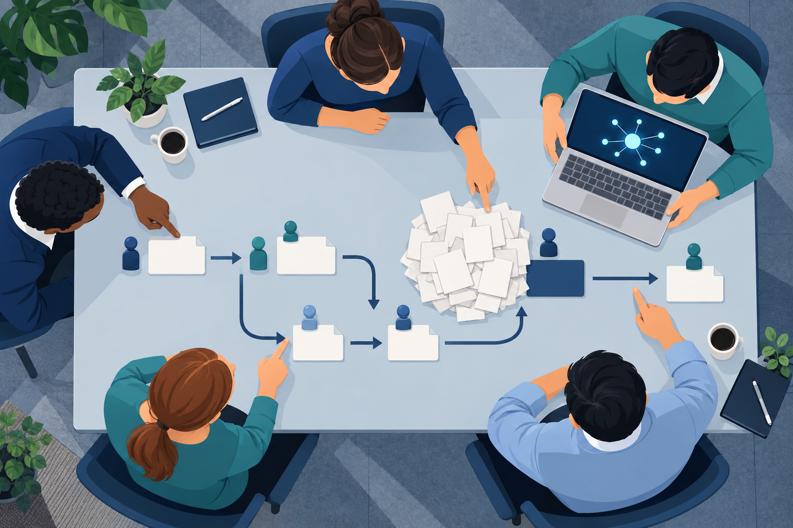

AI가 요약해 줘도 판단력은 직접 길러야 합니다
다음 주 회의 자료를 AI로 요약해 읽었다고 해보죠. 주요 내용도 파악했고, 보고서의 분량과 논리도 흠잡을 데 없습니다. 그런데 리더가 “이 전망은 어떤 가정에 근거합니까? 그 가정이 깨지면 결론은 어떻게 됩니까?”라고 묻자 말이 막힙니다. 여러분은 자료를 이해한 걸까요? 핵심 내용을 아는 것과 결론에 이르는 과정을 이해하는 것은 다른 일입니다. AI가 읽

AI와 함께한 첫해, 우리는 무엇을 배웠나
올해 여러분은 AI를 활용해 업무 효율을 많이 높이셨나요? 보고서 초안부터 회의록 정리, 시장 자료 요약까지, AI 덕분에 각자의 일은 분명 빨라졌습니다. 그렇다면 팀의 일과 회사의 성과도 그만큼 달라졌을까요? 각자 일을 빨리 끝내면 회사의 생산성도 높아질 것 같지만, 꼭 그렇지는 않습니다. 신규 사업 검토 자료를 이틀 만에 끝냈다고 해보죠. 그런데 검토와